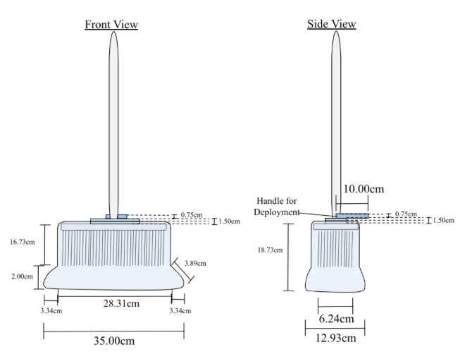
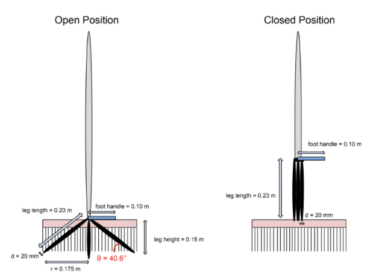
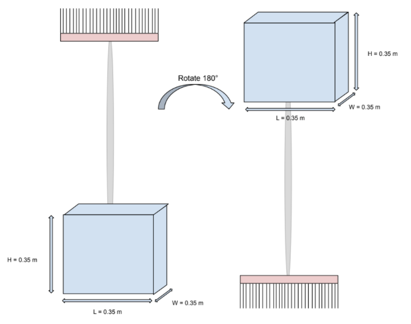
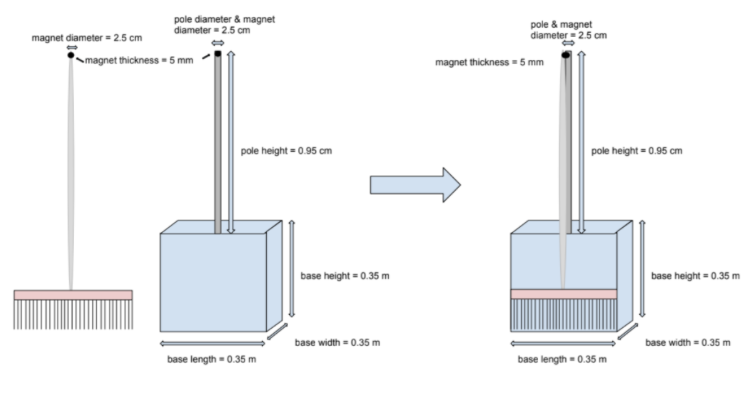
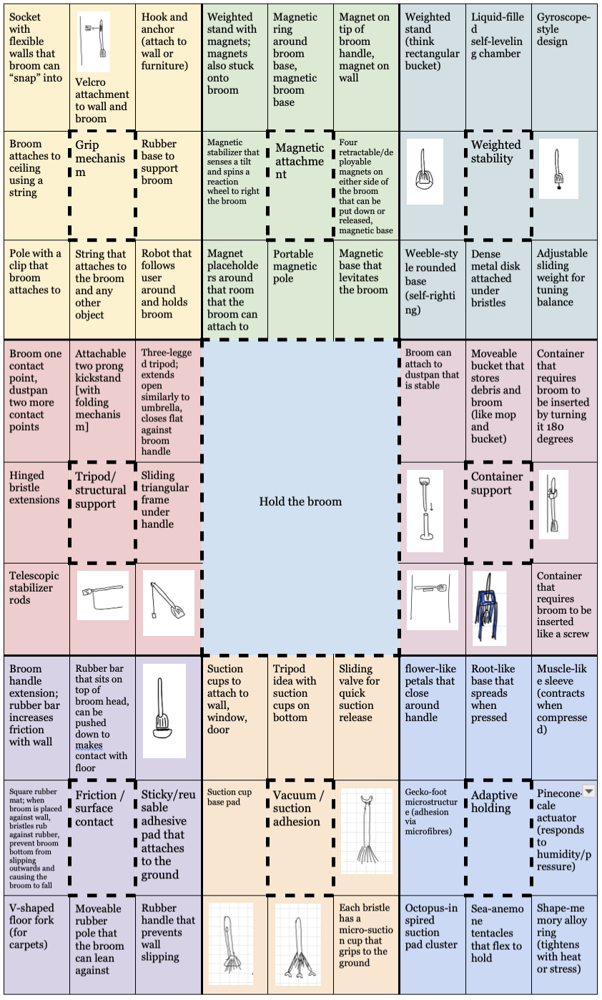

Design Experiences
This section documents my primary engineering design activities. For each project, I have detailed the context, summarized the outcomes, and critically evaluated the specific Concepts, Tools, Models, and Frameworks (CTMFs) that guided my team's process and shaped my personal development.
Praxis I: Hand-Held Broom Optimization
Background & Opportunity
Hand-held brooms (HHBs) are notoriously unstable when rested upright against a wall due to their small base and uneven bristles. When they fall, retrieving them requires five steps and an uncomfortable bending motion. This presents a significant challenge for our primary stakeholders: Engineering Science students experiencing mild to moderate leg and lower back pain, for whom bending causes unnecessary stress and discomfort. The opportunity was to design a mechanism to prevent HHBs from falling [5].
Rigorous Framing
To ensure our design truly solved the problem, we established strict Requirements and Evaluation Criteria (ECs). The attachment needed to:
- Withstand an accidental sideways force of at least 1.5 N without tipping [6].
- Allow the broom to be retrieved in under 5 steps to ensure convenience [3].
- Maintain compactability (base < 0.35m x 0.35m) [3].
- Add minimal weight, keeping the total broom weight under 2.3 kg to prevent ergonomic strain [7][8].
Diverging & Exploring Possibilities
Guided by our framing, we engaged in structured divergence to generate multiple potential solutions. We developed four distinct concepts:
1. Suction Cup

A foot-actuated nitrile suction cup that creates a firm seal with the floor.
2. Tripod Stand

A collapsible, three-legged aluminum system that deploys outward.
3. Weighted Base

A heavy, High-Density Polyethylene block attached to the broom handle.
4. Magnetic Stand

A standalone pole utilizing Neodymium magnets to hold the broom upright.
Converging on a Solution
We utilized a Measurement Matrix, Pugh Charts, and Pairwise Comparison to evaluate our designs. While the Magnetic Stand was the fastest to retrieve (2 steps), horizontal force resistance was our most critical metric. Engineering calculations revealed the Suction Cup could withstand an incredible 14.33 N of horizontal force—vastly outperforming the others (which all withstood under 2.1 N) while remaining exceptionally lightweight at 0.471 kg [3]. Consequently, the Suction Cup was selected as the optimal recommendation [5].
Influence of My Position & What I Learned
I entered this project heavily biased. Once I visualized the suction cup idea, I didn't want to challenge it, and I actively resisted the planning phase in favor of jumping straight into building. My groupmates had to pull me back and enforce the divergence process.
Through this, I had a major realization: while the suction cup did ultimately win, structured divergence revealed that other designs (like the magnetic stand) actually met specific requirements better. I learned the critical importance of extensive planning and evaluating options through rigorous metrics. You cannot just jump to a final design based on intuition; you must justify it. This perfectly encapsulates the "Practice" and "Timeout" phases of my design philosophy.
CTMFs Assessed (Praxis I)
-
1. Divergence & Cognitive Development: Lotus Blossom Technique & The Perry Model
Description & Application
The Lotus Blossom Technique is a structured brainstorming tool used to expand a central concept outward into multiple sub-concepts [9]. We used this as our primary divergence tool to generate a vast, uninhibited array of solutions for the HHB splartz without overanalyzing feasibility (e.g., generating ideas ranging from magnetic stands to "robots that follow the broom") [4].
I analyzed my experience using this tool through the lens of the Perry Model of Cognitive Development [8]. This model tracks intellectual growth from Dualism (believing there is only one absolute right answer) through Multiplicity and into Relativism (understanding that knowledge is contextual and multiple valid solutions exist).

Fig 5: Lotus Blossom brainstorming technique mapped on a whiteboard during initial divergence [4].Critique & EffectivenessWhile the Lotus Blossom successfully forced me out of my comfort zone, its primary limitation in this context was idea bloat. It generated an unnecessarily large number of ideas, many of which were highly impractical. Furthermore, while the Perry Model is an excellent reflective tool to assess my mindset, it suggests a strictly linear progression. In reality, I found that my cognitive state fluctuated; I would achieve Relativism during brainstorming, but occasionally slip back into Dualism when stressed and searching for a quick answer.
Impact on My Position in ContextCombining these two CTMFs catalyzed a massive shift in my design philosophy. Entering Praxis I, I was highly Dualistic—narrow-minded and entirely fixated on my initial suction cup idea. The Lotus Blossom forced me to step back, take a "Timeout," and acknowledge the breadth of possibilities. It guided me toward Relativism, teaching me that engineering is rarely about finding the singular "correct" solution, but rather navigating multiple valid paths to find the most justified one.
Note to Future Self: The Lotus Blossom is powerful, but when time is constrained, there are more efficient, bounded diverging methods to use, such as Brainwriting or Morphological Charts, to prevent overwhelming idea bloat. Additionally, continuously use the Perry Model as a self-check—especially during high-pressure "game" scenarios—to ensure I am not slipping back into rigid, Dualistic thinking. -
2. Framing the Argument: Toulmin's Structure of Argument
Description & Application
Toulmin's Structure is a model for breaking an argument down into specific components: a Claim, supported by Evidence (Data), connected by a Warrant (Justification) [9]. I heavily relied on this framework during the Framing phase of our project, specifically when developing our Needs, Goals, and Objectives (NGOs) [4].
Critique & EffectivenessThis framework was highly effective. By forcing our team to explicitly structure our logic, it ensured our objectives were grounded in shared, defendable reasoning rather than assumed logic. It made our design targets far more meaningful to stakeholders and to ourselves when we later had to design against them [4].
Impact on My Position in ContextThis tool taught me that engineering decisions require explicit justification, not just intuition. I realized that even if an objective feels intuitively reasonable, it is not valid in a design context unless I can articulate why and how I know [4]. This completely shifted my approach to "Practice" (research). Instead of collecting information just to fill space, I now gather evidence with the deliberate purpose of supporting claims.
Note to Future Self: Continue applying Toulmin’s Structure to construct defendable objectives. However, be vigilant to ensure that the Claim always traces directly back to the core user need. In our early drafts, some objectives drifted away from the primary need of reducing back strain, which undermined our framing [4]. Always verify the connection between the objective and the core need before finalizing. -
3. Evaluating Evidence: The CRAAP Test & Primary Research
Description & Application
The CRAAP Test is a framework used to evaluate sources based on Currency, Relevance, Authority, Accuracy, and Purpose [10]. During our project, we needed to establish a metric for Requirement 1.2 (the design must withstand a horizontal force of at least 1.5 N). When secondary research failed to provide a credible, contextual standard for brooms, we were forced to generate the evidence ourselves through primary physics calculations, and I subsequently used the CRAAP test to evaluate my own generated data against the secondary alternatives [5].
Critique & EffectivenessThe CRAAP test is highly effective for comparative analysis. When I evaluated available secondary sources, they scored poorly on Authority and Accuracy (unknown authors, no methodological justification). Applying CRAAP to my own primary research forced me to admit I am not a perfect authority either—I am a student making assumptions. However, the tool made it clear that because my primary calculations were methodologically transparent and directly tied to the context, they were the most credible option available [5].
Impact on My Position in ContextThis experience reshaped my understanding of credibility. It taught me that in engineering design, credibility is not inherent; it must be earned, even when I am the source [5]. It proved that evidence evaluation is an active, comparative process. "More credible" is often more important than "perfect." It cemented my understanding that engineers must continuously evaluate whether evidence is sufficient, and step up to act as the authority when external data is lacking.
Note to Future Self: When secondary research fails the CRAAP Test, do not compromise the integrity of the design by forcing bad data to fit. Rely on your own engineering fundamentals to conduct primary research, clearly state your assumptions, and be prepared to defend your methodology [5]. -
4. Systematic Convergence: Measurement Matrices & Pugh Charts
Description & Application
To narrow down our four concepts, we utilized a combination of a Measurement Matrix (to quantify physical capabilities) and Pugh Charts (rotating the reference design to compare concepts qualitatively against our Evaluation Criteria) [3].
Impact on My Position in ContextThese tools provided objective, undeniable evidence. Seeing the raw math—that the suction cup held 14.33 N compared to the tripod's 1.717 N—removed my personal bias and grounded our convergence in reality [3]. Furthermore, the Pugh charts clearly highlighted the suction cup's weakness regarding compatibility with different brooms. It forced me to acknowledge the flaws in my favored design, validating the crucial "Timeout" phase of my design process where reflection and objective review must trump ego [2].
Praxis II: Automated Wristband Applicator
Background & Opportunity
Balmy Beach Community Day Care serves 166 children in a fast-paced environment. During high-stress transitions like field trips, staff must manually wrap, fasten, and cut wristbands for each child while managing the group. This manual application takes an average of 22.7 seconds per child, creating severe bottlenecks, cognitive overload, and potential safety risks (using scissors near active kids) [11].
Reframing with Constraints
We spent significant time framing the opportunity. We made the deliberate, challenging decision to center the design strictly around the child's experience and to make the device fully automated without changing the actual wristbands the daycare already uses. This self-imposed constraint made the design exceptionally complex, but ensured high adoption viability.
Divergence & The "Pokémon Cards"
Because the automation process was so complex, we could not simply diverge on "whole" devices. We broke the process down into sub-functions and diverged widely. To communicate these concepts clearly, we created "Pokémon Cards" outlining the stats, pros, and cons of our leading subsystem concepts (e.g., Snap Buddy, Air Puff, Ziptron, Tentablob, SafeSnip).

Converging & Verification
We utilized a Measurement Matrix to evaluate the subsystems. Our top design, the "Snap Buddy," reduced the application time from 22.7 seconds to a verified 10.33 seconds. Crucially, we tested the applied pressure using a scale-based setup, measuring between 3.24 to 7.25 kPa—well below our maximum safety threshold of 10 kPa. Upon presenting this verified data to the daycare, they confirmed that if the high-fidelity prototype maintains this safety and efficiency, they are open to implementing it [11].
Influence of My Position & What I Learned
After Praxis I, I swung to an extreme: I prioritized planning so much that I hesitated to make concrete design decisions. I spent an immense amount of time researching and diverging on paper.
During Praxis II, I realized that theory only goes so far. I had to force myself to embrace the "Game" phase of my philosophy: I stopped over-planning and started sketching and building low-fidelity physical prototypes. This was a breakthrough. The physical prototypes immediately revealed real-world limitations that no amount of research could have shown me. It sent me back to the divergence phase, but this time with grounded, physical evidence. I learned that doing is a form of planning, and you must keep the stakeholder at the forefront of every iteration.
CTMFs Assessed (Praxis II)
-
1. Managing Complexity: The Morphological Chart
Description & Application
Because automating the wristband application involved multiple sequential steps (feeding, wrapping, fastening, cutting), attempting to brainstorm complete, all-in-one solutions was overwhelming. We utilized a Morphological Chart to deconstruct the device into discrete sub-functions [6]. We then diverged on each sub-function independently.
Critique & EffectivenessThis tool was highly effective for breaking down a daunting engineering challenge into solvable pieces. It allowed us to generate creative mechanisms (like the "Air Puff" or "Ziptron") for specific tasks without worrying about how the entire machine would look [6]. However, the limitation of a Morph Chart is that combining the sub-solutions can create compatibility issues later on.
Note to Future Self: Use Morph Charts for highly complex, multi-step mechanical designs, but always follow up with immediate interface analysis to ensure the chosen sub-components can actually physically connect to one another. -
2. Granular Convergence: Function-Level Pairwise Comparison
Description & Application
Due to the massive number of permutations generated by our Morph Chart, converging on an entire device at once was impossible. Instead, we adapted the Pairwise Comparison tool to evaluate the mechanisms at the sub-function level (e.g., comparing feeding mechanisms against each other, rather than whole devices against each other) [6].
Impact on My PositionThis granular application of Pairwise Comparison saved us from analysis paralysis. It allowed us to systematically lock in the best components one by one. It reinforced my "Timeout" philosophy: when the game feels chaotic and overwhelming, break it down into the smallest controllable parts, evaluate, and then move forward [2].
-
3. Breaking Paralysis: Low-Fidelity Physical Prototyping
Description & Application
Representation is a core component of FDCR. In Praxis II, I relied heavily on rapid physical prototyping using cardboard, string, and tape, alongside extensive sketching, to test our fastening mechanisms [6].
 Fig 7: Low-fidelity physical prototypes and design sketches used to visualize mechanism limitations [6].Critique & Effectiveness
Fig 7: Low-fidelity physical prototypes and design sketches used to visualize mechanism limitations [6].Critique & EffectivenessThis was arguably the most impactful "tool" I used this semester. While I had been stuck reading research papers, spending 20 minutes building a physical model immediately highlighted friction points and alignment issues that were invisible on paper [6]. It proved that in engineering design, failing fast in the physical world is more efficient than succeeding slowly in theory.
-
4. Quantitative Verification: The Measurement Matrix
Description & Application
To ensure our design was viable, we built a comprehensive Measurement Matrix. We conducted physical proxy tests to determine that our "Snap Buddy" concept applied the wristband in 10.33 seconds (a 54% reduction in time) [6]. Furthermore, we built a scale-based testing setup to measure applied pressure, verifying our device operated between 3.24 and 7.25 kPa (safely below the 10 kPa limit) [6].
Impact on My PositionThis confirmed the lesson I learned in Praxis I: intuition must be backed by data. Proving mathematically that our device would not harm a child gave us the absolute confidence required to proceed with the design and present it to our stakeholders.
-
5. Empathy & Validation: Active Stakeholder Engagement
Description & Application
Engineering design does not exist in a vacuum. The final framework we applied was the Stakeholder Feedback Loop. We took our conceptual data and presented it directly to the staff at Balmy Beach Day Care to validate our assumptions. They confirmed our metric thresholds, stating that if the device is safe and reduces application time to our proposed numbers, they would actively implement it [6].
Impact on My PositionThis was the most rewarding part of the process. It brought my entire engineering journey full circle back to my core motivation: making a positive difference [2]. Engaging with the community reminded me that we aren't just hitting metrics for a grade; we are structuring disorder to improve the daily lives of real people.